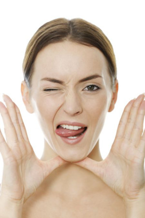

Брудна та щаслива - твоя шкіра
Культ чистоти пройшовся важким чоботом, який виніс своїм твердим носаком масові дезінтерії та тиф, але штовхнув нас в прірву алергій і морок антибіотикорезистентної зарази. Так, мабуть за все треба платити. Але повернемося до шкіри.
Коли ми народжуємося, то проходимо через отой самий заповітний отвір, кудою на світ з'являються діти, і який так чомусь бояться називати вголос та овіюють непристойними забобонами в не надто інтелектуальних колах.
Піхва. Там живуть мікроорганізми, які дають початок твоїй багатомільярдній армії захисників і союзників. Немовля проходячи через родові шляхи, з'являється на світ вкритим шаром материнських мікробів. Вони вже виселекціоновані тривалим співжиттям з матір'ю та ідеально пасують дитині в генетичному плані. Правда, це за ідеальних обставин. До неідеальних можна віднести інфекції, кесарів розтин та застосування антимікробних засобів.
І оті всі мікроби, як вже невдовзі, мов перші колонізатори Марсу, зручненько собі облаштовується на пагорбах наших сальних залоз, обживаються та налагоджують дружбу один з одним та власне з нами. З часом мікробний ландшафт набуває якихось характерних загальних особливостей, наприклад, ділянки з жирнішою шкірою обживають пропіонові бактерії та стафілококи, в місцях, які частіше бувають вологі, наприклад, пахви - більше коринебактерій, а суха шкіра повна протео- та флавобактерій, в той час, як на ступнях ніг більшості з нас живуть аспергіли, родоторули, крипто- та епікококи. Але не зважаючи на такі загальні закономірності, мікробіота кожного з нас - унікальна, мов відбитки пальців. І це вже зараз беруть на озброєння криміналісти.
Нащо нам на шкірі мікроби?
Гарне місце порожнім не буває. Тут тепло, є завжди поживні речовини, тому бажаючі там пожити знайдуться. Тільки не з кожним мікробом буде приємне таке сусідство. Окрім того, наші мікроби захищають нас від "прибульців" - чужих і шідливих мікробів. Роблять вони це у різний спосіб. Найперше - це колонізаційна резистентність. Простими словами це означає, що "поганим хлопцям" вже нікуди підселитися, так як всі вакантні місця на нашій шкірі вже зайняті нашими "хорошими хлопцями".
Друге - бактерії синтезують і виділяють в найближче оточення пептиди з антимікробною активністю , які не заважають сусідам, але "погано пахнуть" новоприбулим чужакам. Вони це можуть робити самостійно, або давати копняка клітинам нашої шкіри, щоб таку зброю синтезували вони. Зокрема, наприклад, епідермальний стафілокок взаємодіє із рецепторами TLR2 на поверхні кератиноцитів, які внаслідок цього виділяють речовини, що пригнічують ріст стрептококів та золотистого стафілококу. Трішки іншим способом, але так само ефективно епідермальний стафілокок робить наші клітини стійкішими до можливого ураження лейшманіозом.
Окрім того, як показують дослідження, мікробіом нашої шкіри не просто якось впливає на наш імунітет , а й фактично його навчає та виховує . Без мікробів на нашій шкірі деякі клітини імунної системи не можуть самостійно визріти та набути здатності нас від когось захищати.
Здорова мікробіота також і заспокоює нашу імунну систему, даючи їй команду стримувати свої емоції та не переборщити із запальними реакціями. Це якраз той випадок, коли маленький прищик може бути або рожевою цяточкою, або червоною плямою на півобличчя.
Але справедливо сказати, що це все так гарно спрацьовує не завжди. Інакше не було б акне, атопічних дерматитів, псоріазів, розацеа та не лише. У всі ці неприємні для нашого дзеркала явища залучені порушення мікробного ландшафту на нашій шкірі та, як наслідок - імунна відповідь також барахлить.
Від чого нашим безцінним мікробам зле?
Наші мікроорганізми щоразу потерпають, коли ми безконтрольно вживаємо антибітики, користуємося протимікробними речовинами та засобами, використовуємо косметику із антибантеріальними компонентами та надто часто проводимо всякі "очищуючі процедури", хімічні пілінги, лазерні шліфовки, тощо. Бюті індустрія насаджує нам стереотипи та відчуття неідеальності й брудності, з якими наче б то нам необхідно боротися, щоб хоч якось віддалено намагатися бути схожими на відфотошоплені обличчя дівчат із глянцю. Справедливо сказати, що в останні роки ситуація трішечки змінюється - великі косметичні бренди також заговорили про мікробіом. І... запропонували споживачам засоби для догляду з про- та пребіотиками, що не так вже й зле. Правда, задоволення то недешеве. Та і мікробіота відновлюється не так швидко, як хотілося б. У цьому плані, якщо говорити не лише про обличчя, не можна не згадати про антиперспіранти. У одному з досліджень показано, що використання антиперспірантів підвищувало кількість актинобактерій, що навпаки сприяло збільшенню інтенсивності неприємного запаху. Упс.
Що можна вдіяти?
Без паніки - ми не закликаємо відмовитися від гігієни та піти повалятися в багнюці (хоча шкіра, мабуть би зраділа). Також не варто нехтувати правилами асептики, коли це є необхідним.
Стара добра істина - все добре, що в міру. Тому до Вашої уваги - маленький перелік того, як можна трохи поглегшити долю наших шкірних мікробів та зробити цей союз гармонічнішим.
- Помірність в очищуючих процедурах. Їх частота має визначатися стилем Вашого життя та інтенсивністю забруднення шкіри;
- Для когось може прозвучати страшно, але якщо Ви не розвантажуєте вагони з вугіллям, то гель для душу щодня не потрібен (якщо таки розвантажували - теж не завжди) - все, що відмивається без миючих засобів, відмиваємо без миючих засобів;
- Те саме стосується антиперспірантів - без надмірного потовиділення користуватися ними, бо "так заведено" не варто. Якщо не бажаєте погіршити ситуацію;
- При виборі гігієнічних засобів для догляду (гель для душу, засоби для вмивання, шампуні, тощо) обираємо ті, що не містять, чи містять меншу кількість антибактеріальних речовин. Без рекомендацій лікаря для щоденого догляду не варто користуватися засобами, що містять, принаймні у першій половині переліку компонентів речовини, які мають виражену протимікробну дію. Це, як наприклад, етиловий та ізопропіловий спирт, бензалконію хлорид, саліцилова та гліколева кислота, тощо.
- По можливості обираємо засоби з дозаторами типу помпи - де засіб не контактує з повітрям та навколишнім середовищем, відповідно, у них міститься менше консервантів, необхідних для зберігання самого засобу;
- Натомість стараємося менше торкатися обличчя брудними руками - це не лише порятує шкіру від небажаного подразнення, а й запобігатиме поширенню респіраторних захворювань. Очищуємо свій мобільний телефон, який ми так часто прикладаємо до вуха та щоки!
- Не зловживаємо засобами та процедурами, що обіцяють "глибоке очищення". Їх необхідність має визначати Ваш лікар-косметолог. Звичайно, те ж саме стосується й антибіотиків. Нехай Ваша шкіра буде не ідеально чистою, але ідеально здоровою! :)
